CS 463G & CS 663
(Intro to) AI
Lecture 30: Reinforcement Learning
Fall 2026
Learning Through Interaction
In reinforcement learning (RL), an agent, the decision-maker, improves how it acts through interaction with an environment, the world it acts on.

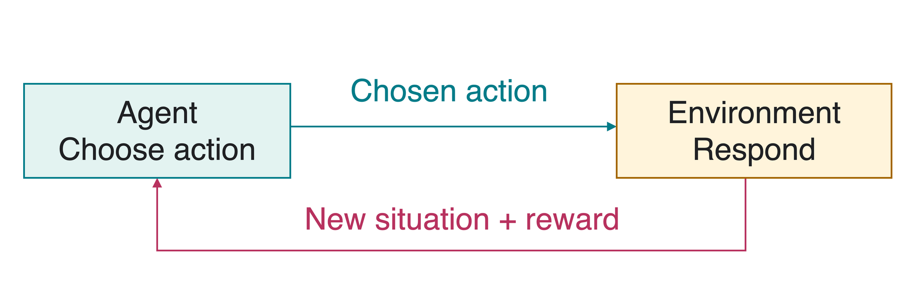
A reward is a numeric feedback signal. It scores an outcome without necessarily telling the agent which action it should have taken.
An action can affect both the next reward and the situations the agent encounters later.
A Delivery Robot’s Choices
At depot D, the robot can finish a small job or visit pickup stop J for a larger job. At J, it can deliver or return to D.
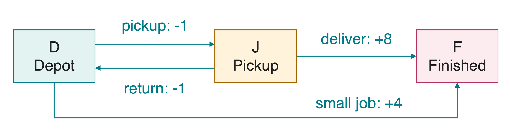
All arrows have certain outcomes here. Rewards are invented points. Pickup and return each cost 1 point.
An episode ends when a job finishes at F. This is a terminal state: after entry, there are no further rewards or choices.
Markov Decision Processes
A Markov decision process (MDP) specifies states, choices, and their consequences. Write s for the current state, a for an action, and s' for the next state.
| Part | Meaning | Delivery example |
|---|---|---|
| \mathcal S | Set of states | \{D,J,F\} |
| \mathcal A(s) | Actions available at s | At D: small or pickup |
| P(s'\mid s,a) | Next-state probability | P(J\mid D,\text{pickup})=1 |
| R(s,a) | Expected immediate reward | R(D,\text{pickup})=-1 |
| \gamma | Discount factor for later rewards | We choose \gamma=0.9 |
The Markov property says the current state contains the information needed to predict the next state and reward, given the action. Include battery level if it affects what the robot can do.
A Policy Is an Action Rule
A policy \pi tells the agent how to act in each state.
- A deterministic policy chooses one action: \pi(s)=a.
- A stochastic policy assigns probabilities: \pi(a\mid s) is the probability of choosing a in state s.
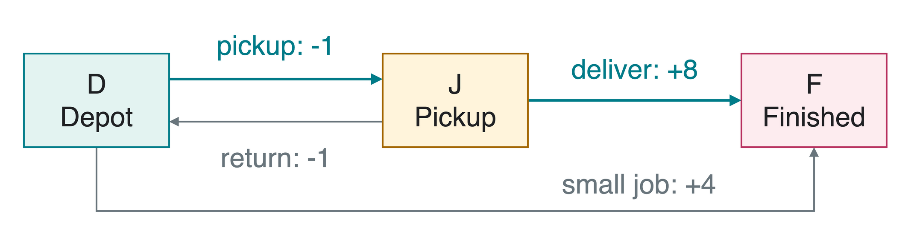
This policy chooses \pi(D)=\text{pickup} and \pi(J)=\text{deliver}. There is no decision at terminal state F.
Return and Discounting
The return G_t adds future rewards from decision step t. The discount factor \gamma gives less weight to rewards received later:
G_t=r_{t+1}+\gamma r_{t+2}+\gamma^2r_{t+3}+\cdots, \qquad 0\leq\gamma<1.
Here r_{t+1} is the reward received after action t. After termination, all remaining rewards are zero.
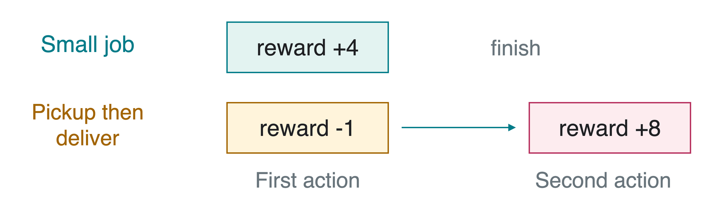
At \gamma=0.9: small job gives 4; pickup then delivery gives -1+0.9\cdot8=6.2.
State Values and Action Values
A value predicts expected return. Let S_t be the state and A_t the chosen action at step t. The expectation \mathbb E_\pi averages outcomes while following policy \pi.
V^\pi(s)=\mathbb E_\pi[G_t\mid S_t=s].
Q^\pi(s,a)=\mathbb E_\pi[G_t\mid S_t=s,A_t=a].

For the highlighted policy: V^\pi(D)=6.2. Choosing small once, then following \pi, gives Q^\pi(D,\text{small})=4.
A Model and Experience
A model predicts consequences through P and R. Planning uses that model to compare future choices.
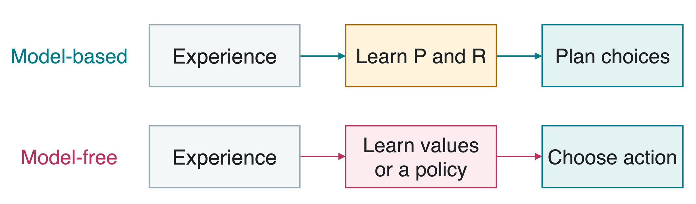
- Model-based RL learns P and R, then plans with them.
- Model-free RL learns values or a policy without an explicit P.
With known P and R, these are planning methods. An RL agent can learn the model first.
One-Step Lookahead and Bellman Equations
One-step lookahead scores an action using its immediate reward and a current estimate V of later value:
\operatorname{LookAhead}(s,a,V) =R(s,a)+\gamma\sum_{s'}P(s'\mid s,a)V(s').
A Bellman equation expresses value recursively. For a fixed policy,
V^\pi(s)=\sum_a\pi(a\mid s) \operatorname{LookAhead}(s,a,V^\pi).
The sums average over possible next states and policy choices. For V=V^\pi, the lookahead score equals Q^\pi(s,a).
A greedy policy chooses an action with the largest lookahead score. GreedyPolicy(V) below means this one-step comparison, including future value.
Value Iteration
Value iteration repeatedly replaces each value by its best lookahead score. A sweep updates every nonterminal state once.
largestChange is the largest absolute value change across states. threshold is a chosen small positive stopping tolerance.
Every update in this sweep reads old. The terminal value stays zero. We call the estimates after k sweeps V_k.
Two Value-Iteration Sweeps
Use \gamma=0.9. Each sweep uses the preceding values, and V_k(F)=0 throughout.
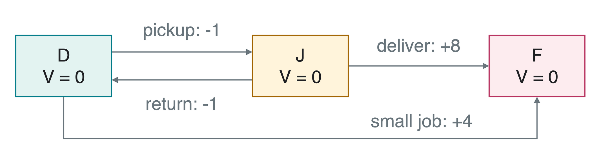
Initialize V_0(D)=V_0(J)=V_0(F)=0.
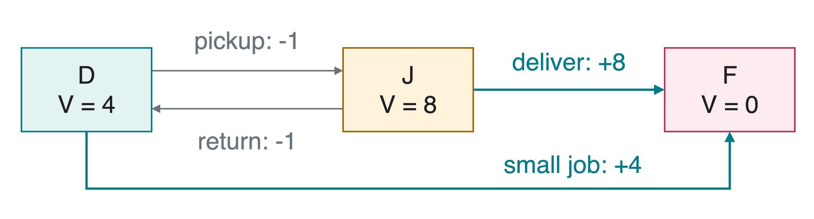
V_1(D)=\max\{4,-1\}=4,\qquad V_1(J)=\max\{8,-1\}=8.
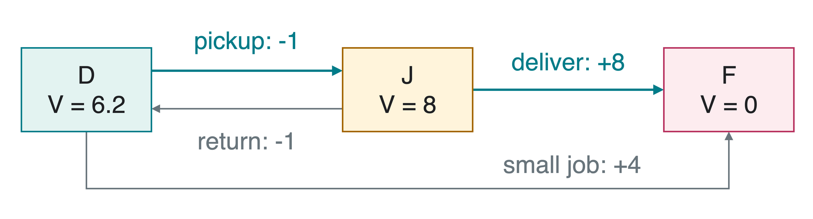
| Sweep | V_k(D) | V_k(J) | V_k(F) |
|---|---|---|---|
| 0 | 0 | 0 | 0 |
| 1 | 4 | 8 | 0 |
| 2 | \max\{4,-1+0.9\cdot8\}=6.2 | \max\{8,-1+0.9\cdot4\}=8 | 0 |
Further sweeps leave these values unchanged in this example.
When a Move Is Uncertain
Modified scenario: pickup from D reaches J with probability 0.8, but leaves the robot at D with probability 0.2. Either outcome costs 1 point.
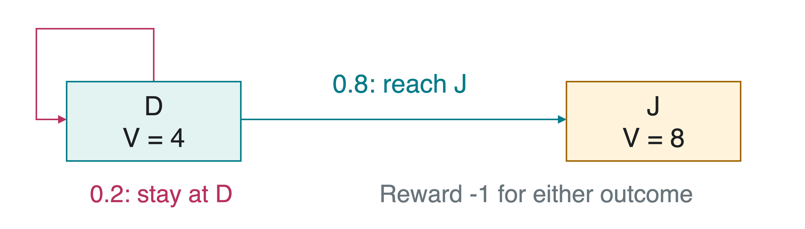
Using current estimates V(D)=4 and V(J)=8:
\operatorname{LookAhead}(D,\text{pickup},V) =-1+0.9(0.8\cdot8+0.2\cdot4)=5.48.
Average over outcomes using their probabilities. This is one lookahead calculation, not the modified model’s converged value.
Policy Iteration
Policy iteration alternates evaluation, computing the current policy’s values, with improvement, choosing better actions using those values.
EvaluatePolicy solves the fixed-policy Bellman equations. When several actions tie for the largest score, GreedyPolicy keeps the current action.
Evaluation predicts the current policy’s long-term outcome. Improvement compares all available first actions while using those evaluated future values.
Evaluating the Current Policy
Return to the original certain-outcome model. Start with policy \pi_0: \pi_0(D)=\text{small} and \pi_0(J)=\text{return}.
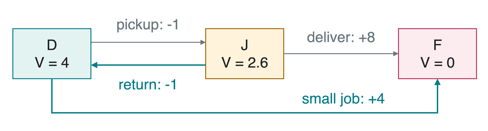
V^{\pi_0}(D)=4+0.9V^{\pi_0}(F)=4.
V^{\pi_0}(J)=-1+0.9V^{\pi_0}(D)=2.6.
These values describe following \pi_0, including its poor choice to return from the pickup stop.
Improving the Policy
Use the evaluated values V^{\pi_0}(D)=4, V^{\pi_0}(J)=2.6, and V^{\pi_0}(F)=0.
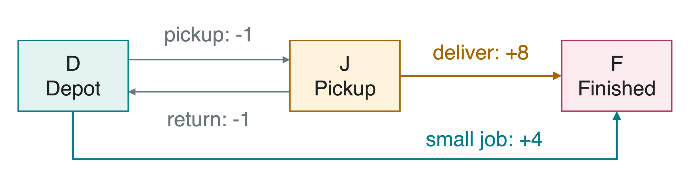
| State | Current action’s score | Alternative score | New action |
|---|---|---|---|
| D | small: 4 | pickup: -1+0.9\cdot2.6=1.34 | small |
| J | return: -1+0.9\cdot4=2.6 | deliver: 8 | deliver |
Only J changes at first. Reevaluate this new policy: its values are V(D)=4 and V(J)=8.
The next improvement changes D to pickup, since -1+0.9\cdot8=6.2>4.
The Final Policy
Both methods choose pickup at D and deliver at J.
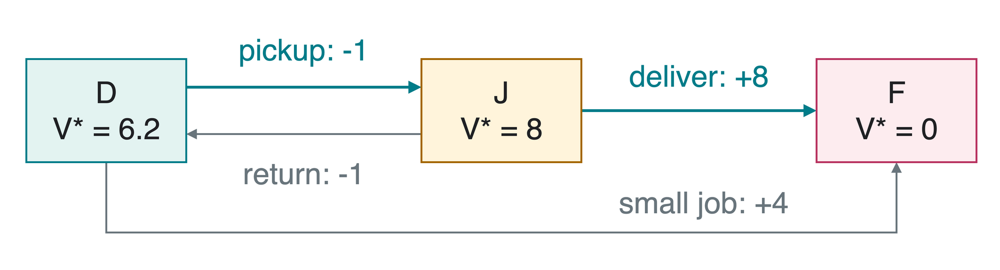
| State | Chosen action’s score | Other action’s score |
|---|---|---|
| D | pickup: -1+0.9\cdot8=6.2 | small: 4 |
| J | deliver: 8 | return: -1+0.9\cdot6.2=4.58 |
An optimal policy \pi^* maximizes expected return from every state. Its values are V^*. No action changes here.
Value Iteration and Policy Iteration
| Method | Main operation | Practical tradeoff |
|---|---|---|
| Value iteration | Repeated best-action value updates | Cheap sweeps, potentially many of them |
| Policy iteration | Evaluate a policy, then improve actions | More work per round, often fewer rounds |
For finite states and actions, bounded rewards, and 0\leq\gamma<1:
- Value-iteration values approach V^*.
- Exact policy iteration, keeping the old action on ties, reaches an optimal policy after finitely many changes.
- At least one deterministic optimal policy exists in this setting.
Both require a model of consequences. Learning that model, or learning decisions directly from samples, is the next part of RL.
Quick Check
- If battery level affects which actions succeed, is location alone a sufficient Markov state?
- Why is V(F)=0 even though finishing gives a positive reward?
- Why does our value-iteration sweep make a copy called
old?
1. No. Include battery level, or another sufficient summary, to predict consequences from the current state and action.
2. The reward arrives on entry. From the finished state onward there are no more rewards. Counting it again would double-count it.
3. To use one consistent preceding estimate. This is the synchronous update shown here. In-place updates are a different valid variant with different intermediate values.
Takeaways
- RL improves action choices through interaction and reward.
- An MDP specifies states, actions, transition probabilities, rewards, and discounting.
- A policy chooses actions. Its value predicts expected return.
- Bellman equations connect current value to successor-state values.
- Value iteration updates estimates using the best lookahead score.
- Policy iteration evaluates a policy, then improves its choices.
Separate immediate reward, long-term return, and the policy that determines future actions.
Next: deciding when to try an uncertain action rather than always using the current favorite.